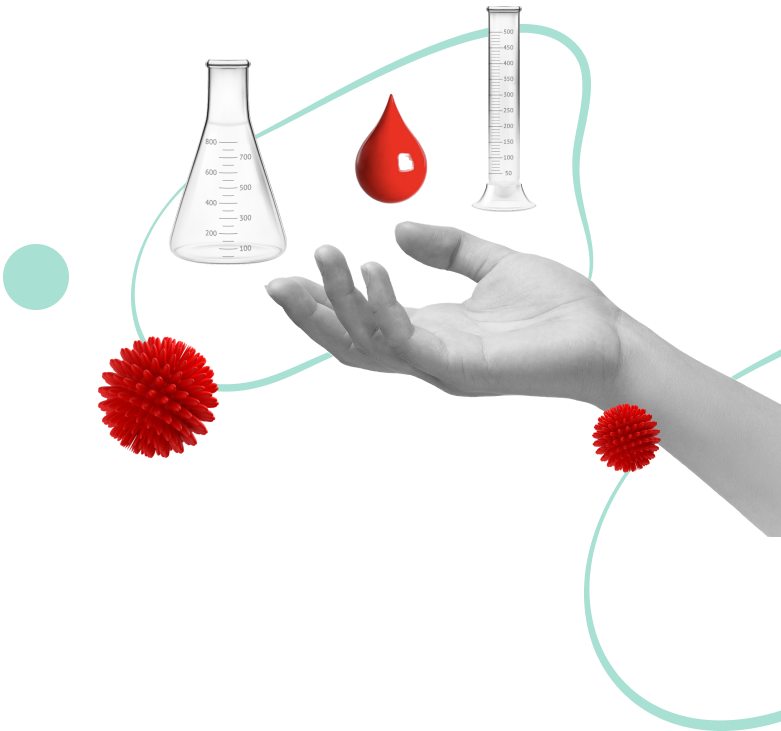

Было — не было:
где скрывается ВИЧ?
где скрывается ВИЧ?
Думаете, что ВИЧ — это болезнь маргиналов и «обычных» людей она касаться не может? Или, наоборот, боитесь случайно заразиться через поцелуи и рукопожатия?
Читайте истории наших героев, пробуйте угадать, насколько близко они знакомы с ВИЧ, и узнавайте больше об этом заболевании!


ПОМНИТЕ: предупрежден — значит вооружен. К сожалению, в нашем обществе до сих пор живут различные мифы про ВИЧ и СПИД.
Разрушая их, человечество становится на шаг ближе к контролю над эпидемией этого заболевания.
Диагностика ВИЧ — это вопрос ответственного отношения, заботы о себе и своих близких. Своевременное обнаружение ВИЧ-инфекции позволяет вовремя начать лечение, снизить личные риски и защитить своих родных. Даже если кажется, что проблема ВИЧ вас не касается, всегда лучше пройти тестирование и убедиться в этом наверняка!

ВИЧ: только факты
Более 800 000
людей в России инфицированы ВИЧ,
и это только те, кто уже знает о
своем статусе
и это только те, кто уже знает о
своем статусе
40+
возрастная группа, лидирующая по
количеству новых случаев передачи
ВИЧ в Московской области
количеству новых случаев передачи
ВИЧ в Московской области
у 41 000
человек в Московской области
диагностирован ВИЧ
диагностирован ВИЧ
94,2%
ВИЧ-положительных жителей
Подмосковья старше 30 лет
Подмосковья старше 30 лет
1 раз
в год
в год
всем рекомендуется проходить
тестирование на ВИЧ
тестирование на ВИЧ
1 раз
в 3-6 месяцев
в 3-6 месяцев
тем, кто считает, что имел какие-
либо рискованные контакты
либо рискованные контакты
От 2 недель до 6 месяцев
может составлять период
«серологического окна» – промежуток, в
течение которого вирус уже существует
в организме человека, но еще не
определяется с помощью теста на антитела
может составлять период
«серологического окна» – промежуток, в
течение которого вирус уже существует
в организме человека, но еще не
определяется с помощью теста на антитела
7 из 10 новых случаев
заражения ВИЧ наступают в
результате незащищенного
секса с ВИЧ-позитивным (и,
возможно, не знающем о своем
статусе) партнером.
заражения ВИЧ наступают в
результате незащищенного
секса с ВИЧ-позитивным (и,
возможно, не знающем о своем
статусе) партнером.
Презерватив – это единственное средство
предохранения, которое может защитить от ВИЧ-
инфекции при половом контакте.
предохранения, которое может защитить от ВИЧ-
инфекции при половом контакте.
40+
возрастная группа, лидирующая по количеству новых случаев передачи ВИЧ в Московской области
Если все же случился незащищенный контакт, есть 72 часа
на постконтактную профилактику
на постконтактную профилактику
Срочно обратитесь в свой
региональный центр СПИД Получите рекомендацию врача
для экстренной профилактики
региональный центр СПИД Получите рекомендацию врача
для экстренной профилактики
Сходите в аптеку за лекарством и
пройдите весь курс лечения
пройдите весь курс лечения

ВИЧ НЕ передается
- воздушно-капельным путем
- при бытовых контактах, объятиях, рукопожатиях, прикосновениях
- при контакте со слюной: поцелуях, кашле, чихании, плевках
- при посещении общественных мест: бассейнов, саун, пляжных и туалетных кабинок
- через общие предметы: посуду, столовые приборы, одежду, постельное белье, телефон
- через укусы насекомых
ВИЧ может передаваться:
- через незащищенный проникающий половой контакт (секс без презерватива)
- через совместное использование оборудования для инъекций (шприцы, тату-иглы и т.д.)
- от ВИЧ-инфицированной матери ребенку во время беременности, родов, грудного вскармливания, если она не соблюдает рекомендации врачей и не получает антиретровирусную терапию
От ВИЧ можно защититься!
Всегда используйте презерватив! А также проверяйте условия
его хранения и срок годности сразу после покупки.
его хранения и срок годности сразу после покупки.
Старайтесь контролировать свои возможные ситуации риска и контакты с партнерами из числа
лиц с «рискованным поведением»: склонных к беспорядочным связям и/или приему наркотиков.
лиц с «рискованным поведением»: склонных к беспорядочным связям и/или приему наркотиков.
Используйте только индивидуальное стерильное оборудование для
любых инъекционных вмешательств или при контактах с кровью.
любых инъекционных вмешательств или при контактах с кровью.